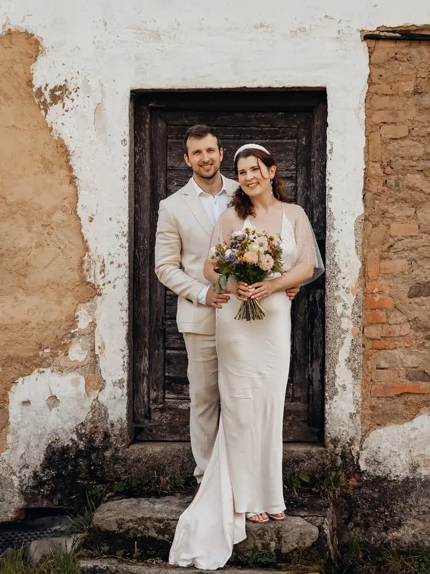
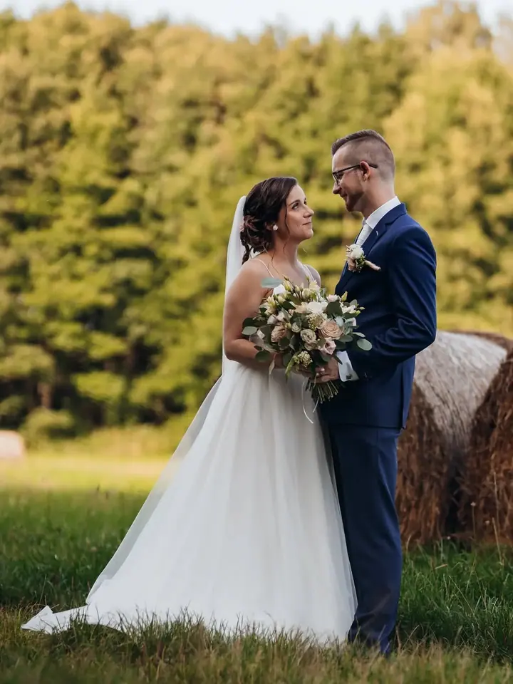
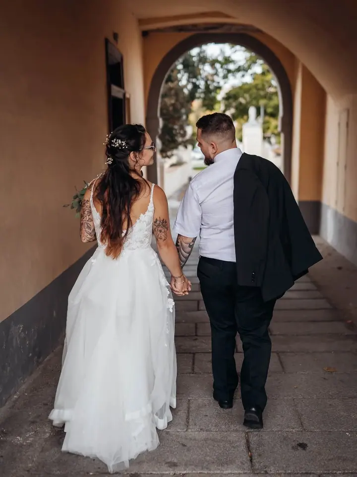
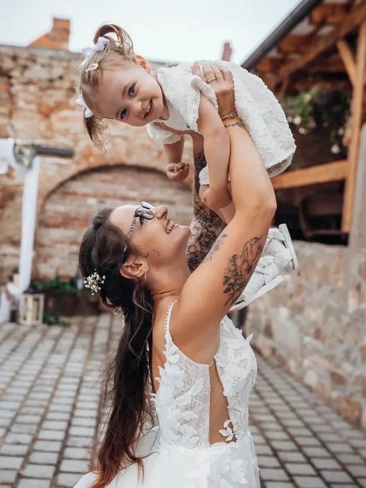

jedna
Svatby
Fotím svatby takové, jaké opravdu jsou. Přirozené fotografie plné skutečných emocí, smíchu i něhy, od příprav až po tanec s hosty.

Svatební a lifestyle fotografka · Plzeň, Plzeňský kraj, Nepomuk

Jmenuji se Lucie Skalová a jsem svatební a lifestyle fotografka z Plzeňského kraje. Fotím svatby takové, jaké opravdu jsou, s veškerým smíchem, dojetím i něhou. Kromě svateb ráda fotím rodiny, děti a portréty.
Více o mně
Co fotím
jedna
Fotím svatby takové, jaké opravdu jsou. Přirozené fotografie plné skutečných emocí, smíchu i něhy, od příprav až po tanec s hosty.
dvě
Sváteční focení v připravené vánoční scéně. Hezká vzpomínka i dárek pro celou rodinu.
Uvolněné rodinné focení, kde děti můžou být samy sebou. Hledám malé nenápadné okamžiky, ze kterých se skládá celek.
Portrétní focení v klidu a bez strojených póz. Takové fotky, na kterých se poznáte.
Smích, něha a skutečné emoce

Za objektivem
Bydlím v Dvorci u Nepomuku a fotím hlavně v Plzeňském kraji. Nejvíc mě baví svatby, protože se během jednoho dne potká úplně všechno: nervozita, dojetí, smích i tanec s hosty.
Nechci z vás dělat modely. Fotím přirozené fotografie plné skutečných emocí, smíchu i něhy. Ty nejhezčí často vzniknou ve chvíli, kdy si mě skoro nevšímáte.
Kromě svateb fotím rodiny, děti a portréty a dlouhodobě také tvořivé workshopy a akce v jednom ateliéru. Mám ráda, když je kolem ruch a pohyb a já v něm hledám ty malé nenápadné okamžiky.
Lucie
Ozvěte se přes formulář nebo e-mailem a já vám pošlu ceník.
Probereme, jak si svůj den představujete, kde se bude konat a na čem vám nejvíc záleží.
Jsem s vámi a fotím nenápadně a přirozeně. Vy si užíváte den a já hlídám emoce, detaily i atmosféru.
Fotky pečlivě vyberu a upravím a pošlu vám je v online galerii, ke které se můžete kdykoli vracet.
Portfolio
Otázky
Nejčastěji v Plzeňském kraji, kde i bydlím. Pokud se berete jinde, napište mi a domluvíme se.
Ceník vám ráda pošlu, stačí mi napsat přes kontaktní formulář nebo e-mail.
Vůbec ne. Nechci z vás dělat modely, fotím přirozeně a pomůžu vám, abyste se před foťákem cítili dobře.
Ano, fotím také rodiny, děti, portréty a vánoční focení. Napište mi, co si představujete.
Napište pár vět o tom, co si představujete. lucieskalova.photo@gmail.com